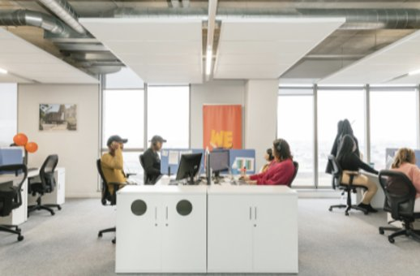
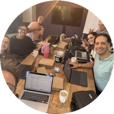
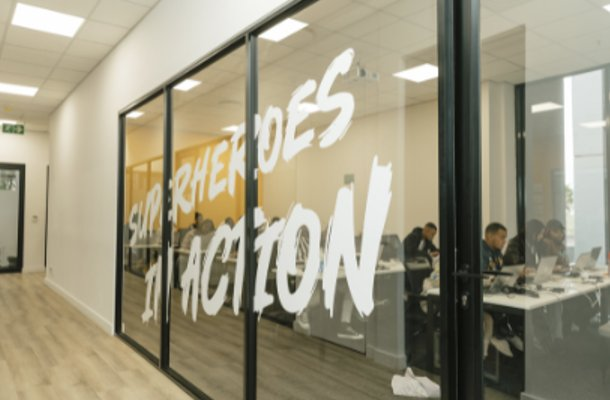
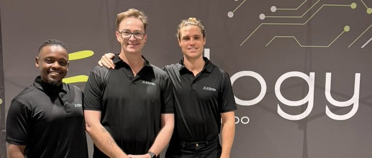
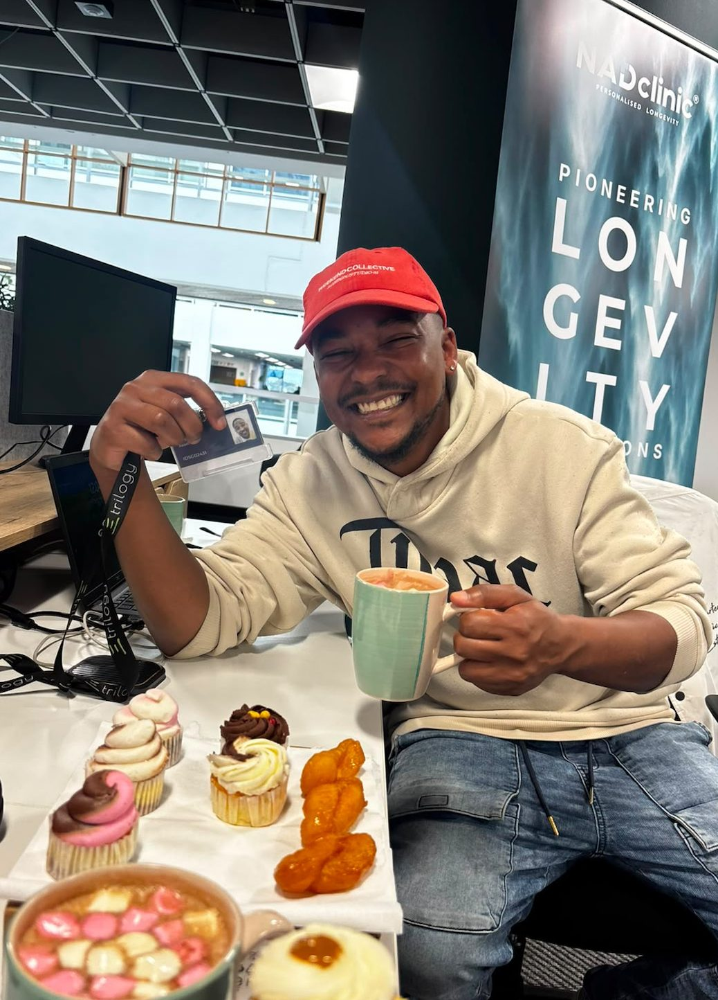
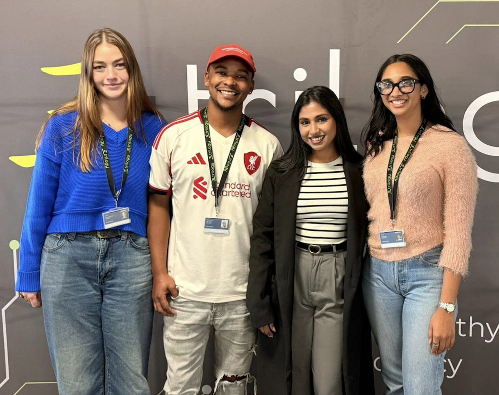

CEO & Founder
Human Led · Ai-enabled
This document is commercial-in-confidence and prepared exclusively for the recipient named above. It may not be reproduced or disclosed to third parties without the written consent of Trilogy Digital (Pty) Ltd.
This is NOT A PROPOSAL. This Pro-Forma Proposal document is presented to Lightning Fibre to provide an indicative proposal of the costs associated with offshoring your services to Trilogy in Cape Town, South Africa. Once we have a FULL understanding of your requirements and specifications, Trilogy could provide a formal proposal.
Please also see who Trilogy Digital is, what we offer, and our experience and capability. We hope this will provide you with the initial information to prepare your business case. We have kept this overview document short, and as a discussion document only. We can always share our full company overview at your request.
We thank you for taking the time to review this, and we hope that the indicative commercials make you think of Trilogy and Cape Town when the time comes to outsource. We love it here and would love you to come and visit Cape Town soon. One of the top three global outsourcing destinations, for the past 5 years.
Regards,
Kobus van der Westhuizen
CEO and Founder
Trilogy Digital (Pty) Ltd is a purpose-built customer experience (CX) joint venture between Trilogy BPO and CXG, operating as a single integrated entity and now a Trilogy Group company. The partnership marries CXG's 27-year operational tenure and scale within the South African market to Trilogy's deep expertise in managing UK campaigns and delivering advanced digital and AI capabilities.
The combined leadership team brings over 25 years of industry expertise, having previously established and successfully exited two major BPOs. Over their careers they have managed more than 36 contact centre operations, scaled over 10,000 seats globally, and delivered CX programmes for brands including John Lewis & Partners, British Gas, Vodafone UK, Aldi UK, and Virgin.
Today, Trilogy Digital deploys over 1,000 CX specialists across five operational sites in South Africa, anchored by its flagship campus at Mutual Park in Cape Town. Despite this scale, Trilogy Digital remains an owner-led, high-touch business — focused on being responsive.
Owner-led and privately owned. Brings deep UK campaign management experience and advanced digital and AI capability.
27 years of operational tenure and scale within the South African contact centre market.


Trilogy Digital's footprint has more than 1,000 FTEs across Cape Town, Johannesburg, with the majority in Cape Town, across two sites. Every site is Trilogy Digital owned or leased and operated directly, never via franchise or affiliate. This offers an advantage where your current operation is in Cape Town. Your operation will fit seamlessly into our current operations, offering stability and risk mitigation associated with a new site.
| Site | Status | Scale |
|---|---|---|
| Mutual Park, Cape Town | Active, primary UK-client site | 5-star green-energy campus; scalable to 1,000+ seats |
| Century City, Cape Town | Active | 150+ FTE; scalable to 300 within 24 months |
| Rosebank Quarters, Johannesburg | Active | 200+ FTE; scalable to 400 within 24 months |
| Maharishi Institute, Johannesburg | Active | 100+ FTE; 750+ pre-assessed graduate pipeline per year |
| National WFH continuity layer | Active | 40–60% cloud-first from home for flex & BCP |
Our leadership team has transferred, deployed and managed multiple operations in Cape Town, South Africa from inception. We also provided CX programmes for globally recognised UK brands including John Lewis & Partners, British Gas, Vodafone UK and Aldi UK. Our operational and HR (People) experience is aligned with your UK and US requirements.
All our lessons learnt during these transitions, including job profiling, recruitment strategies and transferring of knowledge, provide us with a unique opportunity to leverage this experience and position ourselves as your ideal partner of choice.
We understand the importance of retaining competence and tenured staff and key individuals, including those in positions of operational leadership. We know our ways of working to be effective in delivering a tangible employee value proposition and believe our ways of working, including our core values, are closely aligned to those of your business. The investment made to date will not be lost, as we have significant experience in transitioning work between operators and core expertise in managing the change associated with the change of employer as a going concern.
One Team, 20 Years
Same founders / EXCO team have worked together across all these companies.
We feel confident that together we can transition the existing operation effectively, minimise risk and craft a long-term delivery strategy focused on elevating your customer experience, leveraging AI where appropriate, and building a partnership that creates true bi-directional value for both parties.
While we operate at 1,000+ FTE in aggregate, our model is deliberately built to run focused, boutique pods with senior attention. We ideally stand up smaller (20–80) dedicated teams with its own Operations Manager, Team Leaders, Product Specialist / trainer and account management rather than absorbing you into a shared pool of resources. We have repeatedly launched and scaled teams of this size, including recently launching a global BPO's first 100 seats in six weeks before scaling to 1,000+. Named, comparably sized references can be shared under mutual NDA.
25 years behind the world's brands.
Over the past 25 years, Trilogy's leadership has managed over 30 contact centres for some of the world's most recognised brands. That gives us insight into the challenges and opportunities of offshore customer-service delivery, with deep vertical expertise across telecommunications, utilities, retail, fast food, insurance and technology.


Human Empathy, with AI Efficiency.
We are a premium (boutique) customer service, back-office and tech-support BPO partner — enterprise-ready and AI-enabled. We are not a commodity offshore provider. We are a high-quality, owner-led, high-touch delivery partner that competes on quality first and cost second, with the scale, technology depth and client portfolio to prove it.
In practical terms: 40–60% below UK onshore delivery costs; higher CSAT than comparable offshore markets; an active AI toolset deployed in production (not in planning); and a leadership team with 25+ years of UK-market experience who are personally accountable for every programme.
| Differentiator | What it means for you |
|---|---|
| Proprietary AI built in-house | We do not white-label third-party AI; our platform represents 8 years of in-house AI/ML development. |
| “Test Kitchen” model | A dedicated innovation hub that designs, tests and deploys new AI and digital capabilities in a sandbox without disrupting BAU operations. |
| Outcome-aligned commercial models | Including our Value Creation Model (VCM), which ties commercial success to client outcomes, retention and CX uplift. |
| Agnostic technology approach | We are equally comfortable operating within client-owned platforms or deploying our own; we do not force platform migration. |
Two decades of consistent excellence in the BPO industry has positioned Trilogy as a trusted partner for global brands. Our track record speaks to our ability to deliver results at scale while maintaining the highest standards of quality and innovation.
Our team has created 45,000 jobs over the past 20 years, making a significant positive impact on South Africa’s economy and communities.
Two decades of proven track record in providing exceptional value to our customers across multiple industries and geographies.
Eight years of experience developing AI and Machine Learning platforms, analytics solutions, and digital automation tools.
Successfully built and launched 36 contact centres for blue chip companies in South Africa over 20 years.
Our largest local competitors include Merchants, Concentrix, Teleperformance SA and Sigma Connected. Trilogy Digital is differentiated on four structural grounds:
South Africa has consistently been ranked the second most attractive Business Process Outsourcing location globally, after consecutive years of high performance. Source: McKinsey.
South Africa — and Cape Town in particular — is one of the world's premier destinations for UK-facing customer experience delivery. It combines deep English-language and UK cultural alignment, a mature BPO ecosystem, favourable time zones and compelling cost advantages, all without the quality trade-offs associated with other offshore markets.
The operations will be managed from our Pinelands site in Cape Town. Trilogy will deploy the exact same operational structure as your current operations. We are however recommending the addition of a dedicated product specialist/trainer to the team to support ongoing product, process and system training, along with any new-hire and ramp training requirements.
Tanya Phillips, our COO, will be the executive lead, supported by Vancyon van Zyl, who is Director of Transitions and Operations, and Rudi Jansen, our Chief People Officer. The dedicated Operations Manager will own the day-to-day performance, and a Key Account Manager will be responsible for owning the strategic, commercial relationship and roadmap. Key Account management will be provided by a UK-based senior Account Manager. The CEO and COO participate directly in your monthly and quarterly business reviews and will participate in your strategy sessions as and when required.
Your team will have direct contact both for any discussions or escalations.
Our people are our differentiator.








At Trilogy BPO, our Employee Value Proposition is built on one unshakeable belief: When people thrive, business follows.
On-site counsellors and a culture that genuinely supports mental and physical health.
DE&I isn’t a policy — it’s who we are. Every voice belongs here.
Market-aligned compensation that recognises and rewards the value you bring.
Relevant, real-world benefits designed around the lives of our people.
We invest in growing leaders at every level, from first-time managers to executives.
Celebrating contributions — big and small — because people deserve to feel seen.
At Trilogy, how we attract, source, onboard and retain talent is our secret sauce. Our people processes are built to support the full employee lifecycle — from candidate to top performer — with our culture and our approach to Diversity, Equity & Inclusion embraced at every stage rather than bolted on as a standalone policy.
Campaign-driven, mobile-first sourcing with unique links and QR codes per line of business.
AI-enhanced behavioural and CEFR language assessment; automated, bias-reduced shortlisting.
Zero re-keying handover into a single digital employee file; pre-boarding to 90-day journey.
Role-specific LMS pathways with randomised assessments and operational-readiness sign-off.
Continuous, data-led development and a clear path from advisor to team leader and beyond.
Coaching cadence and QA-driven refreshers keep capability ahead of account demands.
Quality insights, assessment results and performance trends shape what we train, and when.
Structured exit process, insight loop and alumni/rehire approach that feeds retention.
Skills needs analysis & job profile; customized recruitment plan; talent sourcing via partners, advertising, referrals, WOLC and campaigns.
Assessment & selection; screening; competency-based interviews; outcomes-based assessments.
Reference & integrity checks; shortlist & compliance report; client acceptance interviews; hiring.

Our recruitment engine runs as a single automated pipeline — from first application to Day 1 handover — with POPIA-compliant consent, automated assessment and zero re-keying into the digital employee file. Every step is communicated to candidates via email and WhatsApp in parallel.
Campaign-specific link/QR code; mobile application, ID/CV/selfie upload, POPIA consent captured
Personal details and Employment Equity data captured and auto-classified for reporting
Role-specific, objective online assessment triggered automatically; results scored and shortlisted against role thresholds
Recruiter reviews ranked shortlist; candidate self-books a face-to-face interview; joint HR + Operations decision
Background verification triggered on verbal offer; banking, tax and next-of-kin details completed via secure portal
All data consolidated into one digital record; contract and offer letter auto-populated and e-signed
Approved employee file pushed automatically to onboarding — zero re-keying, candidate welcomed with start date confirmed
The typical Trilogy Digital UK-facing agent is an English-first South African professional aged 22–35 — digitally native, highly empathetic, and culturally attuned to UK consumer expectations before a single day of induction. Educational backgrounds span NSC (Matric) through to tertiary degrees, typically with 1–3 years of prior customer-facing experience.
Training runs as a continuous, SAQA/NQF-aligned cycle — strategic planning, coaching and gap analysis, curriculum development, workshop/OJT/coaching and verification — underpinned by quality and performance management.
SAQA / NQF aligned · continuous improvement
A continuous cycle — verification insights feed straight back into strategic planning, so every cohort sharpens the next.
Every agent deployed on a UK mandate completes a UK Cultural Immersion programme before going live, covering UK consumer psychology, regional geography and idioms, brand-specific tone of voice, the UK seasonal/holiday calendar, and the regulatory environment relevant to the programme (e.g. Ofwat, Ofgem, FCA, Ofcom, Consumer Rights Act).
| Role | Typical tenure |
|---|---|
| Customer Service Agent | 18–30 months — above sector average |
| Senior / Specialist Agent | 24–36 months, with funded external qualifications |
| Team Leader | 3+ years; >60% promoted internally |
| Quality Analyst | 2–4 years, typically developed internally |
Industry average monthly attrition sits between 9–12%; our team has maintained 3–4% monthly attrition. Full attrition data by site and role is provided under NDA at RFP stage.
We grow leaders at every level through a staged programme matched to leadership level — from Emerging Leaders (the inner game of leadership), to Leading Others (the bridge to leadership), to Leading of Leaders (strategic leadership at scale).
Our EVP rests on a simple idea: look after our people, and strong performance follows. It runs through six pillars across the employee lifecycle.
Market-benchmarked pay per role and line of business, plus monthly performance bonuses.
Medical insurance, transport and meal allowances, funeral/life cover and staff discounts.
On-site counsellors and a culture that genuinely supports mental and physical health.
DE&I woven through how we lead, our policies and our culture — every voice belongs here.
We grow leaders at every level via Trilogy’s structured leadership pathway.
Monthly recognition, spot bonuses, fun days, lunches and team building.

Wellbeing is not an add-on — it is embedded into how we run operations. We partner with Soul Impact, a specialist provider of onsite, trauma-informed mental health support built for the contact centre industry, giving every employee direct, confidential access to professional counselling as part of their working life.
LifeLine-accredited trauma counsellors deliver crisis counselling, impact counselling and coaching in confidential 50-minute sessions — onsite or virtual, booked via a simple QR code. A wellbeing session is embedded into induction, so every new starter knows the support exists from Day 1.
Data-led, trauma-informed wellbeing support for South African companies — onsite Impact Counselling & Leadership Resilience Training that turns real-time wellbeing data into preventative care.
Trauma-informed support for maximum impact in a limited timeframe — onsite, embedded and part of your company culture.
| Offering | What it delivers |
|---|---|
| Crisis Counselling | Immediate, confidential trauma-informed support when people need it most. |
| Impact Counselling | Focused counselling for maximum impact in a limited timeframe — onsite or virtual, booked via QR. |
| Coaching | Practical coaching that builds resilience and performance alongside counselling support. |
| Leadership Resilience Training | Equips leaders to read wellbeing signals early and turn real-time data into preventative care. |
| Step | How it works |
|---|---|
| 1 | Onsite Wellbeing Team & QR booking triages employees |
| 2 | Counsellors deliver Impact Counselling onsite or virtually |
| 3 | Monthly feedback data reveals trends |
| 4 | Specialist referral network & induction embedding |
#VibeCheck — every week we run an anonymous employee-satisfaction pulse. Each person rates their week across five mood measures, from “Tough” to “Unreal,” and can add their own words. It gives us an honest, ongoing read on morale — and a steady signal of what we are getting right and what we can do better.


Culture is the difference between a documented procedure and a team that actually lives it. At Trilogy, every person matters and every voice counts — we lead with respect, care and empathy. Everything we stand for is captured in a single word: CRAFT.
Our clients come first. We anticipate their needs and exceed expectations, every time.
Good enough is never the goal. We deliver the best, every time.
We win together. There is no “my success” — only ours.
We take the work seriously. Not ourselves.
We do what we say. We show up. Trust is earned here.
Your brand values, tone and ways of working embedded into induction from Day 1.
Calibration sessions with your leadership to align on culture, standards and expectations.
Co-branded recognition programmes and your branding visible across the site.
Nominated champions who carry and reinforce your brand across every team.
Trilogy operates QA as a 360° approach. We focus first and foremost on downstream (agent-controllable) insights, where an agent can improve, where the operation can improve, and, most importantly, the segmentation of initiatives into quick wins and long-term plans, so we can implement meaningful “low-hanging fruit” improvements alongside strategic initiatives across the tenure of the contract. Our analytics engine also surfaces upstream (non-agent-controllable) insights, giving you valuable information to manage your supply chain and internal operations more effectively.
Our QA runs on two parallel tracks. Automated QA (via Genii) evaluates up to 100% of interactions for sentiment, compliance and distress flags, replacing the traditional 1% manual sample. Human-led QA then evaluates a structured sample against a multi-dimension scorecard, with weekly and monthly calibration consistently achieving >85% evaluator agreement. Genii's II-QA scorecard is fully customisable to your KPIs and separates what an agent controls from what your business needs to fix.

Issue Resolution Failure ~62%
Identifies reasons for Non-Resolution (nFCR).
Repeat Occurred ~11%
Identifies reasons for Repeat Interactions.
Expression of Dissatisfaction ~10%
Identifies reasons for customer dissatisfaction.
Repeat may Occur ~10%
Identifies instances where a repeat call may occur.
Advisor Conduct & Behaviour Issue ~7%
Identifies instances of Advisor Conduct & Behavioural Issues.

Trilogy has spent the past 2 years working with some well-known brands in the Medical, FMCG and Wellness fields and has developed solutions which have all had a positive impact on their customers. After transfer and stabilisation, we believe that we can assist with the following:
Of inbound email volumes deflected or auto-drafted on eligible programmes.
Reduction in processing labour per unit on structured workflows — ideal for your back-office expansion opportunity.
Handles CRM updates, confirmations and voucher/document dispatch automatically.
On eligible programmes — available if voice is ever added.
Unlike the standard two-tier weighted scorecard used by most contact centres, Genii's II-QA (Interaction Intelligence – Quality Assurance) is a fully customisable, multi-tier scorecard built around your KPIs — scoring both agent behaviour and business-level limitations. Scores are calculated as Applied Weight ÷ Applicable Weight × 100, with N/A answers excluded from the denominator so results reflect real, controllable performance.
| Element | Approach |
|---|---|
| Scorecard model | Blank, fully customisable campaign built from your KPIs — multiple sections, multiple output-metric questions |
| Assessment / pass target | Recommended 80% assessment target and 80% pass target, tuned per programme |
| Scoring failures | Agent-controllable fail scores 0; non-controllable business fail scores 0 but does not affect the agent |
| Calibration | Quality-Manager-run gauge assessments on live calls (zero agent impact); high-variance assessors flagged |
Our analytics partner Genii moves quality beyond traditional QA toward true Interaction Intelligence — turning contact-centre data from a cost centre into a strategic asset. Where most tools tell you what happened, Genii tells you why it happened, which agent behaviours are driving it, and exactly what to do next. Their models carry a home-field advantage in the South African BPO market, tuned for local accents, cultural nuance and high-empathy service.
Digitises 100% of interactions, replacing 1% manual sampling with full-coverage automated scoring so every agent can be developed on real, complete data.
Layers behavioural science on top of the data — root-cause analysis, micro-friction tracking and linguistic DNA mapping of top-performer behaviours.
Correlates interactions to commercial outcomes — predicting churn risk and prescribing the exact retention, sales or resolution action to protect margin.
Trilogy is leveraging the Genii Analytics platform, combined with our MIS platform, to identify improvement opportunities on a continuous cycle. It covers 100% of all interactions. The platform, once configured, provides insights on the four quadrants, impacting Customer Experience and Business Performance: Agent Performance, Operations Performance, Business Performance and Customer Experience.
Continuous improvement loop — Design, Operate, Deploy and Improve around an Analytics & Insights hub — driving People Performance, Operational Performance, Business Performance and Customer CX.
One platform. Four intelligence dimensions.
Powered by Genii Analytics · AI-Driven Contact Centre Intelligence
Continuous improvement is structured around four pillars, each directly applicable to a digital-first, asynchronous voucher operation. Improvement is data-led and time-boxed, Voice of Customer signals are operationalised within 48 hours rather than waiting for a monthly report.
Our CX programmes combine full-coverage quality intelligence with behavioural coaching. Through our partner Genii we digitise up to 100% of interactions, map the “linguistic DNA” of top performers, and coach the wider team toward those behaviours, turning quality from a 1% sampling exercise into a genuine CX-improvement engine. For your asynchronous channels this is particularly powerful, because tone, accuracy and completeness of written responses are the primary CX levers.

Our MI framework spans real-time dashboards through to Quarterly Business Reviews, with every report designed to be action-oriented, insights, root causes and recommended actions, not just metrics. Digital-specific views (emails received and pending, average response time, WhatsApp and chat queues, and backlog status) are available digitally. Secure API exports let your team pull performance directly into your own BI environment, including Power BI.
| Frequency | Purpose | Delivery |
|---|---|---|
| Real-time | Monitor digital queues, backlog and SLA as they happen | Live dashboard |
| Daily | Review prior-day volume, CX, productivity, quality & workforce | Daily MI report |
| Weekly | Trends, root cause and actions taken | Weekly Business Review |
| Monthly | Strategic scorecard incl. continuous-improvement tracking | Monthly Business Review |
| Quarterly | Roadmap, innovation and executive alignment | Quarterly Business Review |
Based on our understanding of Lightning Fibre's requirements, we propose to deliver the following services.
Our standard framework delivers a fully operational programme within 12–16 weeks across four phases. Accelerated 8–10 week implementations are achievable where the client provides comprehensive runbooks and dedicated SME access from week one.
| Phase | Weeks | Key activities |
|---|---|---|
| Discovery | 1–3 | Process mapping, integration assessment |
| Build | 4–7 | Technology configuration, training material development, recruitment |
| Training | 8–11 | Induction, product/culture/brand, nesting, QA calibration with 100% human evaluation |
| Ramp | 12–16 | Phased volume transfer, dual-running with incumbent, KPI parity validation |
| Frequency | Phase | Meeting type | Focus |
|---|---|---|---|
| Daily | Implementation | Stand-up | Progress updates, blockers, resource alignment |
| Weekly | Implementation | Steering Committee | Milestone tracking, risk/budget/timeline updates, escalations |
| Weekly | BAU | Operational sync | Tactical performance review, immediate issue resolution |
| Monthly | BAU | Monthly Business Review (MBR) | KPI performance, root cause, trend analysis, action tracking |
| Quarterly | BAU | Quarterly Business Review (QBR) | Strategic review, innovation roadmap, executive alignment |
| Risk | Mitigation |
|---|---|
| Project management gaps | Robust Project Management Charter developed jointly and approved by the client |
| Insufficient transition resourcing | Dedicated transition team with 15+ UK transitions; client commits a named counterpart team |
| Scope creep | Detailed, signed Statement of Work (SOW) before project commencement |
| Knowledge transfer failure | Documentation-first protocol and dedicated KT Leads with formal sign-off authority |
| Incumbent non-cooperation | Teaming agreements and collaborative transition governance |
| Technology integration delays | Mandatory Week 1 integration pre-assessment; bridge platform if client-side integrations stall |
| Recruitment quality / timing | Over-recruit 15–20% above target FTE from a pre-assessed bench pipeline |
| Quality dips during ramp | 100% human-evaluated QA during nesting; Auto QA flags risk interactions in real time |
Deployed a Facebook-to-WhatsApp conversational AI executing full checkout and payment processing 24/7 without human intervention.
Redesigned a collections operation using digital-first and autonomous communication platforms.
Built a 24/7 multichannel support network supporting rapid subscriber expansion past 1,000,000+ users.
Trilogy's mission statement is to provide Human-Led, AI-enhanced solutions. This means that while we have spent over 8 years developing AI and digital automation solutions, our primary focus remains the people in our operation and how we assist them to deliver better service to their customers. Our AI solutions are geared specifically to enhancing the agent's ability to support their customers, and our systems provide support for Voice, Email, WhatsApp and almost all social media and RCS platforms.

Trilogy has two approaches to technology. Approach 1 — deploy our fully owned and managed platform, providing the end-to-end technology solution for our customers on our QContact platform. Approach 2 — operate as a technology-agnostic, client-based partner, deploying and managing within the client's own stack.
QContact is a cloud-based omnichannel customer communications platform that unifies calls, emails, WhatsApp, live chat and social media into a single interface. Founded in 2017, it provides built-in CRM functionality, case management and communication AI tools, omnichannel inbox, Communication AI (call transcriptions, conversation summaries and sentiment analysis), native WhatsApp integration and workflow automation.
Fully automated AI voice platform for inbound service and proactive outbound (services, sales, collections).
Live AI-generated response suggestions, knowledge-base access and process guidance on-screen during every contact.
After-Call Work Assistant — automates callbacks, CRM updates, document dispatch and logistics notifications.
Digital & autonomous collections — AI-driven segmentation, predictive analytics and automated recovery communication.
Real-time language translation enabling any agent to service any customer regardless of language.
People, technology, process and AI/ML analytics work as one continuous system — orchestrated for voice, digital and automation so CX outcomes compound rather than fragment.
Digital agents, management and shared services as an outsourced operation.
Leverage the technology stack to provide omnichannel customer engagement.
WhatsApp customer engagement, messaging and digital campaigns.
Customer interaction, behavioural science and next-best-action recommender platform.
Independent industry benchmarks reinforce the impact of a human-led, AI-enabled model. The following are representative outcomes achievable across an asynchronous customer operation like yours.
Organisations using AI report up to a 27% reduction in Average Handle Time.
AI-led outreach outperforms traditional methods by 20% in sales and collections.
Businesses using AI-driven sentiment analysis report a 35% increase in CSAT.
AI identifies at-risk customers with 90% accuracy for proactive intervention.
Achieve 100% Quality Assurance (QA) coverage by using AI to audit every single conversation for legal compliance and brand standards.
Companies using AI-driven sentiment analysis can increase long-term customer lifetime value (LTV) by 15–20% through proactive intervention.
“95% of decision-makers already using AI report immediate cost and time savings… while AI-powered predictive analytics can drive a 25% increase in recovery rates for outbound functions.”
— Salesforce / NobelBiz (2025/2026). Source: Salesforce: What is an AI Contact Center?Indicative rates for discussion. Final rates confirmed in the Statement of Work.
| Role | Activity | Skill Set | Range (Min) | Range (Max) |
|---|---|---|---|---|
| Customer Support Tier 1 | Handles generic customer queries | English proficient, computer literacy, soft skills | £1,290 | £1,590 |
| Customer Support Tier 2 | Handles more complex customer queries | English proficient, computer literacy, soft skills, systems skills | £1,350 | £1,690 |
| Technical Support Tier 1 | Handle general desktop-type support | As above + MCSE or MSP | £1,690 | £1,850 |
| Technical Support Tier 2 | Handle more complex type support | As above + CCNA / Zendesk / MS Expert | £2,500 | £3,000 |
| Technical Support Tier 3 | Generally handles call out — very complex | Not catered for in contact centre | — | — |
| Backoffice Support Functions | Billing queries / onboarding / administration | As above with specific back-office processing experience | £1,790 | £2,000 |
| Finance & Accounting Support Function | Accounts & payments, accounts receivable | As above with CCA or Articled | £2,250 | £2,500 |
Based on 12 Tier 1 Technical Support Agents.
| Description | No. | CTC | Total monthly cost |
|---|---|---|---|
| Technical Support Tier 1 | 12 | £1,770 | £21,240 |
| Total monthly | £21,240 | ||